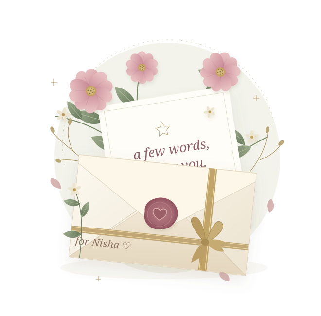
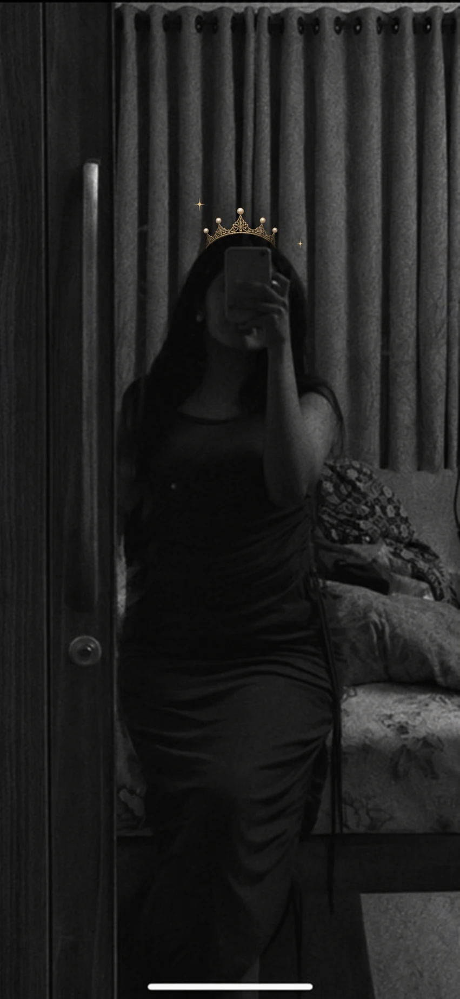

Nee kekkura vidham.
Naan evlo pesunalum, enna mokka potaalum, porumaiya kepa. Unkitta edhayum sollalaam-ngra andha comfort… adhu romba special, ma.
my favourite listenerNee sirichale pothum, ma.
Konjam wishes. Konjam nyabagangal.
Unkitta sollanum nu vechirundha
neraiya anbu.
Take your time, ma. Indha vaarthaigal unakkaaga.
Un birthday music… indha vaarthaigal kooda.

Unakkaaga, manasaara.Periya vishayangal mattum illa, ma. Indha chinna chinna nee.
Naan evlo pesunalum, enna mokka potaalum, porumaiya kepa. Unkitta edhayum sollalaam-ngra andha comfort… adhu romba special, ma.
my favourite listenerUn calm-aana pechu. Naduvula varra andha childishness. Rendum serndha nee. Unkooda pesumbodhu, sirikkaama irukka mudiyuma?
konjam cute, romba chellamUn talent, un boldness, un negotiation skills. Unakkunu oru yosana irukku. Un vishayatha nee handle panra vidham enakku romba pidikkum.
nee oru gem, Nisha maOvvoru petal-layum, naan rasicha oru nee.
Oru petal-a touch pannu, ma.
Anju petals… ellame en favourite nee. ♡
Podhaadhu dhaan… aana indha anju chinna vishayangal-la irundhu aarambikkalaam, ma.
Oru petal-a thottu paaru…Nee enkitta andha “wowwwww” nu solra vidham irukke… adha nenachaale enakku sirippu varum. Oru chinna vaarthai dhaan, aana un voice-la adhu avlo cute, ma.
Indha poova paathum oru kutty “wowwwww” solluviya? 😌
Adha un kural-la kekkanum pola irukku. ♡Un kannu pathi sollaama indha flower complete aaguma, ma? Andha azhagana kannu… en mutta-kannu azhagi nee.
Unna paathale enakku sandhosham nu sollirukken la? Adhula un kannukkum oru pangu irukku. Unna rasikka chinna chinna kaaranangal neraiya irukku, ma.
Unna paathale oru sandhosham. ♡Enakkaaga nee neraiya risk eduthirukka, ma. Adha naan saadharanama eduthukkala. Nee potta effort-um, en pakkathula nee ninna nerangalum enakku nyabagam irukku.
Nee enakkaaga pannadhellam naan marakkala. Andha anbum, andha effort-um enakku eppovum special.
Thank you, en thangam. ♡Enakku udambu seri illa nu paduthirundha, oru mani nerathukku oru vaati health pathi kepa. Naan eppadi irukken nu avlo paasama paathuppa.
Andha nerathula un care enakku evlo aarudhala irundhuchu theriyuma? Unna maadhiri enna yaaralayum care panna mudiyadhu nu thonum, ma.
Andha paasam… enakku romba precious. ♡En movie partner nee. Rendu perum padam paathadhu, hotel hotel-a saapida suthinadhu… adhellam enakku romba pidicha nyabagangal.
Unkooda irundhaa oru movie-um, oru saapadum kooda oru azhagana plan aagidum. Andha naatkal-la enakku romba pidicha vishayam, un company dhaan, ma.
Unkooda irundha, ordinary-um special. ♡Unakkaaga, anju chinna notes.
Anju petals. Ore nee.
Evlo special theriyuma, ma? ♡
En last birthday-ku, nee enakkaaga ezhudhina indha letter. Idha paakkumbodhu, andha birthday-oda sandhosham thirumba nyabagam varudhu.
Nee evlo kaasu selavu panni oru gift vaangi kuduthirundhaalum, indha letter kudutha sandhoshatha enakku kuduthirukkuma nu theriyala, ma.
Enakkaaga nee time eduthirukka. Enna nenachu, vaarthaigal yosichu, un kaiyaala ivlo azhaga ezhudhiyirukka. Nee potta effort-um, ovvoru line-layum irukkura un anbum dhaan enakku avlo special.
Un kaiyezhuthu, andha kutty hearts, enna pathi nee ezhudhina vaarthaigal… idhellam paakkumbodhu, “enakkaaga ivlo pannirukka” nu manasu nirainjidum.
“You are my unexpected, unforgettable love.”— En birthday letter-la nee ezhudhina vaarthaigal
Indha line-a padikkumbodhu enakku vandha sandhoshatha eppadi solla nu theriyala. Nee ezhudhina ovvoru vaarthaiyum enakku precious, ma.
Indha birthday-ku, en vaarthaigal-la
unna konjam chellama paathukkanum nu aasai. ♡
Nerla ukkandhu pesura maadhiri… indha letter-a padichuko.
Nisha ma,
Unakku birthday wish panna ukkandhen. Aana unna pathi yosikka aarambichadhum, solla vendiya vishayam neraiya vandhuduchu.
Mudhala… thanks for coming into my life, ma.
Nee vandhadhukku appuram, en life-la neraiya vishayangal maariduchu. Naan edho maadhiri, manasu odanju suthittu irundha nerathula nee vandha. Unkooda irundha ovvoru naalum enakku best day dhaan.
Unkooda irundha sirichite iruppen. Edhaavadhu kashtam irundhaalum, un pakkathula irukkumbodhu adhu konjam light-a theriyum. Avlo fun-a, avlo nimmadhiya irundhuchu, ma.
En vaazhkaila marubadiyum colour, sirippu, sandhosham vandhadhula… unakku oru periya pangu irukku.
Unkitta pesa aarambichaa, innum konjam neram pesalaam nu dhaan thonum. Perusa edhuvum nadandhirukka vendam. Unkitta pesanum. Avlodhaan.
Ma, nee oru azhagana listener. Naan evlo pesunalum, enna sonnalum, enakkaaga porumaiya kepa. Enakku mukkiyama therinja chinna vishayatha kooda, neeyum mukkiyama eduthuppa.
Unkitta pesumbodhu, “idhellam sollalama?” nu naan romba yosikka vendiyadhe illa. Manasula irukkuradha appadiye pesuven. Adhu enakku evlo comfort kuduthuchu theriyuma?
Naan unkitta eppadi irundhaalum, un side-la irundhu nee enakku neraiya nalla vishayangal dhaan kuduthirukka. Un calm-aana pechum, naduvula varra andha kutty childishness-um… rendum enakku romba pidikkum.
Unkooda serious-a pesa aarambichalum, konja nerathula sirichitu dhaan iruppen. En mokka pechukku ivlo porumaiya audience kidaichadhu enakku periya luck dhaan. 😌
Nee cute-nu naan solluven. Aana unna admire pannadhukku adhu mattum kaaranam illa.
Nee super talented. Unakkunu oru yosana irukku. Un vishayatha nee pesi handle panra vidham, un independence, un boldness, un negotiation skills… idhellam naan nijamave rasichirukken.
Adhe nee, enkitta avlo gentle-a iruppa. Unkitta andha strength-um irukku, softness-um irukku. Rendum enakku romba pidikkum, ma.
Naan en goals pathi pesumbodhu, nee enna demotivate pannadhe illa. Kettu, en pakkathula ninnu, en mela nambikkai vechirundha. Naan ennaye konjam marandhu pona nerathula kooda, nee enna nalla vidhama paatha.
Unkooda irundha, enakku veetla irukkura maadhiri oru nimmadhi irundhuchu.
Un vaarthaigalaala nee enna comfortable-a feel panna vecha. Nee enakkaaga pannadhellam naan marakkala, ma. Thank you nu oru vaarthai sonna podhuma nu theriyala. Aana sollanum: thank you, thangam.
Un phone eppo varum nu aasaiya wait pannina naatkal nyabagam irukku. Phone vandhaa, unkitta pesalaam-ngra andha sandhoshame thani.
Unkooda enna padam paakalaam, enga polaam, enna pannalaam nu yosichite iruppen. Unkooda irundhappo, andha saadharana naatkal kooda evlo azhaga irundhuchu.
Indha Diwali-ku, unnodu serndhu celebrate pannina Diwali dhaan nyabagam vandhuchu. Sila nyabagangal appadithaan, ma… thirumba yosichaa andha nerathukke kondu poidum.
Namma nerla irundha nerangal ellam, naan romba happy-a irundhirukken. Unna paathale oru sandhosham. Adhula un sirippu vera.
Nee sirichale pothum. Nijama.
Unakku pidichadha pannanum, unakkaaga irukkanum nu thonum. Unkitta idhellam sollanum, sollanum nu neraiya naal nenachite irundhen.
Naan nejamaave edhirpaakala… namakkulla ivlo dhooram varumnu.
Konja naal amaidhiya irundha, ellam seri aagidum nu dhaan nenachen. October 10-ku appuram, avanga appadi kettadhu therinjadhum manasu suthama seri illa. Aana appovum, unna vittudanum nu naan nenaikkala.
Unga chithappa enna nenaipaangalo nu enakku bayama irundhuchu. Aana avanga call pannadhukku appuram, enakkulla oru dhairiyam vandhuchu.
“Idhellam pesi seri pannidalaam… ivala mattum vittura koodadhu” nu thonuchu.
Adhukku appuram dhaan unkitta eppadiyaavadhu pesanum, nadandhadhellam seri pannanum nu try pannen.
Aana en mela thappu irukku, ma. Naan edhuvume sollama poitten.
Adha nenachu ippovum kashtapadren. Appove unkitta theliva pesirukkanum. En manasula enna irundhuchu nu unakku sollirukkanum. Naan sollama vittadhellam unakku thaana purinjirukkum nu nenachadhu en thappu.
Oru vaati unkitta nerla pesina, naan solla nenachadha sollidalaam nu romba aasaiya irundhen. Eppadiyaavadhu kenji pesidalaam, oru vaati paathu pesina seri pannidalaam nu nenachen. Contact panna try pannen. Call pannen. Aana pesa mudiyala.
Nee ivlo dhooram varradhu kashtama irukkum, naane varalaam nu unga veetukitta vandhen. Aana naan nenacha maadhiri adhu nadakkala. Unkitta nerungi varanum nu nenachu pannadhu, namakkulla innum dhooram aana maadhiri irundhuchu.
Adhu enakku romba valichuchu, ma. Naan pannadhu unakku kashtama irundhirukkalaam-ngradhu ippove enakku puriyudhu.
Thirumba normal-a pesidalaam nu neraiya aasai patten. Adhu nadakkaama ponappo, nee sandhoshama irundha podhum nu nenachen. Aana un nyabagam mattum vandhute irundhuchu.
Unna miss pannadhu periya moments-la mattum illa.
Summa ukkandhutu iruppen. Edhaavadhu oru chinna vishayam nadakkum. Udane unkitta sollanum nu thonum. Appuram dhaan, munna maadhiri unna koopittu pesa mudiyala-ngradhu nyabagam varum.
Sila neram un nyabagam vandhu, enakke theriyama azhudhuruven.
Unakku notes ezhudhura pazhakkam irukkula? Unkitta sollanum nu thonina neraiya vishayatha naanum ezhudhi vechirukken. Unkitta pesa mudiyadha nerathula, andha vaarthaigal ellam notes-la irundhuchu.
Munna weekend vandha, unkooda enna pannalaam, enga polaam, enna padam paakalaam nu yosippen. Nee illaama andha chinna chinna plans-a kooda romba miss pannen. Movies kooda paakuradhu kurainjiduchu.
Unkooda irundhappo, adhellam evlo azhaga irundhuchu nu appuram dhaan innum purinjadhu. Nee pona appuram, en daily life-la oru periya amaidhi vandha maadhiri irundhuchu. Neraiya naal lonely-a feel pannen; naan seira vishayangal-la kooda manasu muzhusa illaama irundhuchu.
Unakku marriage aagiduchu nu sonnapo, mudhala ennaala nambave mudiyala. Enna avoid panradhukkaaga solriyo nu kooda nenachen. Appuram andha photo paathappo azhudhuten, ma. Unna miss pannitom-ngra unarvu romba kashtama irundhuchu.
En marriage pathiyum, en future pathiyum enakku irundha aasaiyum thelivum appo konjam maariduchu. Life eppadi pogudho paapom-ngra maadhiri dhaan irundhen.
Indha vaarthaigal ellam unkitta sollanum nu romba naala vechirundhen. Marubadiyum unna paakka mudiyuma, ippadi ukkandhu pesa mudiyuma nu enakku theriyala.
Aana solla oru vaaippu kidaicha, unna naan evlo admire panren, nee en vaazhkaila evlo azhagana nyabagangal kuduthirukka nu sollanum.
Unna maadhiri oru ponnu vaazhkaila kidaikka, kuduthu vechirukkanum. Nee oru gem, Nisha.
Nee enakkaaga neraiya pannirukka. Unna nyabagam vechirukkura en manasula, andha nandriyum anbum eppovum irukkum.
Nee ippo happy-a iruppa nu nenaikuren, ma. Nee eppovum happy-a irukkanum. Un nimmadhiyum, un sirippum, un sandhoshamum enakku mukkiyam.
Un success-kaaga naan eppovum pray panren. Un talent-ku nalla opportunities kidaikanum. Nee aasai padra vishayangal nadakkanum. Un efforts-ku recognition kidaikanum. Nee un mela proud-a feel panra nerangal neraiya varanum.
Unakku pidichadha sei, ma. Unna nalla paathukko. Unakkunu neram eduthuko. Unna nee konjam extra chellama paathukkaradhula thappe illa.
Unakkaaga oru gift vaangirukken. Nee enkitta romba naala kettadhu. Eppovaavadhu namma meet panna vaaippu vandha, appo unakku tharen, ma. Adhu varaikkum, unakkaaga pathirama irukkum.
Innaiku birthday girl nee dhaane… konjam extra chellam ellam unakku dhaan. Unakku pidicha saapadu, unakku pidicha people, unakku pidicha maariye oru azhagana birthday irukkanum.
Birthday cake-um nalla saapdu. Birthday annaiku mattum piece chinnadha cut panna koodadhu. 🤍
Indha letter-la irukkura ovvoru vaarthaiyum unkitta naan nijamave rasicha vishayangal-la irundhu vandhadhu, ma. Unna miss panren. Unna admire panren. Unakku nalladhellam nadakkanum nu manasara aasai padren.
Enoda thangam, always thangam.
Happy Birthday, Nisha ma.

Innaiku konjam extra chellam unakku dhaan, Nisha ma. Unakku pidicha maadhiri indha naal irukkanum.
Un photo-ku oru kutty crown vechuten. Ippo konjam birthday girl maadhiri sirichuko… nee sirichale pothum.
En thangapoovey, it's your day. ♡ Unakkaaga innum oru wish irukkuKannai moodi, unakku romba pidicha oru wish nenachuko.
Indha chinna candle unakkaaga.
Un wish nijamaaganum, ma. 🤍
Un dreams, un sirippu, un sandhosham.💕 Happy Birthday, Thangapoovey…
nee sirichale pothum.Unakku time irundha… en kural-la konjam kekkuriya, ma?